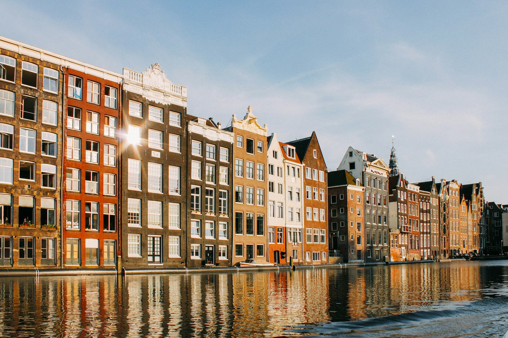
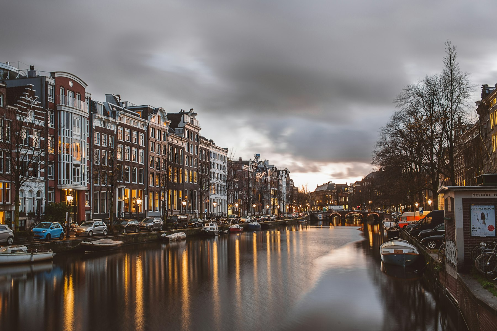

Bewoners haken af
Complexe stukken maken participatie vooral toegankelijk voor mensen die de taal, tijd en procedure al kennen.

Hackathon 2026 · YIMBY · Samenspraak
Een AI-tool die bewoners in begrijpelijke taal laat meepraten en zienswijzen omzet in een bruikbaar participatieverslag. Sneller draagvlak, minder ruis, meer woningen.
Het probleem
Bewoners ontvangen plannen vol juridisch taalgebruik. Gemeenten krijgen losse zorgen, dubbele zienswijzen en veel handwerk. Ontwikkelaars verliezen maanden terwijl het echte gesprek te laat en te onduidelijk plaatsvindt.
Complexe stukken maken participatie vooral toegankelijk voor mensen die de taal, tijd en procedure al kennen.
Inspraak komt binnen als losse opmerkingen, pdf's en bezwaren. Clusteren en beantwoorden kost veel capaciteit.
Niet omdat niemand kan bouwen, maar omdat het proces onvoldoende vroeg, helder en gestructureerd is.
Case study
De Schapenweide is een ontwikkellocatie van 13,3 hectare in De Bilt, met ruimte voor maximaal 450 woningen en 25.000 m2 Life Sciences. De echte spanning zit niet in de bouw, maar in de fases waarin participatie, zienswijzen en vergunningstukken elkaar raken.
Bron: Samenspraak-Wedges deck, Gemeente De Bilt, AM.
Privaat. Niet de bottleneck.
Bureaucratische onderhandelingen.
VertragerZienswijzen, stikstof, Raad van State.
BlokkeerderAfhankelijk van fase 3.
VertragerAannemer. Niet de bottleneck.
Onze oplossing
Samenspraak maakt zichtbaar wat er in de buurt leeft, zonder dat bewoners juridische taal hoeven te spreken of gemeenten handmatig door stapels reacties moeten werken.
Complexe planstukken worden vertaald naar begrijpelijke uitleg over woningen, groen, verkeer en planning.
Bewoners reageren in hun eigen woorden. Samenspraak bewaart de menselijke toon, maar haalt de ruis uit de inbox.
AI groepeert reacties rond thema’s als verkeer, groen en geluid, zodat patronen direct zichtbaar worden.
De output wordt een controleerbaar participatieverslag met conceptreacties, klaar voor professionele beoordeling.
Demo
Hier komt de hackathon-demo. Plak straks alleen de YouTube-, Vimeo- of Loom-url in assets/script.js.

Demo video nog niet gekoppeld
Vervang de placeholder met jullie video-url zodra die online staat.
“Participatie hoeft niet te vertragen. Als je het gesprek vroeg en helder organiseert, kan het juist versnellen.”
Het team
Vanuit vastgoed, recht en technologie bouwen we aan participatie die bewoners serieus neemt en besluitvorming werkbaar maakt.
Co-founder · Strategy
Strategie- en businessachtergrond via Metyis en IE Business School. Brengt de procedurele kant van woningbouw terug naar een helder verhaal.
LinkedInCo-founder · Product & Technology
Product- en ondernemende achtergrond via cicle skin en Erasmus School of Economics. Vertaalt AI naar concrete workflows voor echte gebruikers.
LinkedIn
Samenspraak
Een hackathonprototype voor een woningmarkt die geen tijd heeft om goede plannen te laten vastlopen in onduidelijkheid.
Terug naar demo